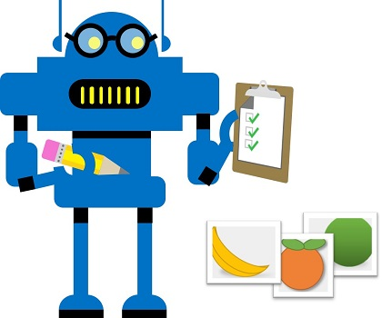
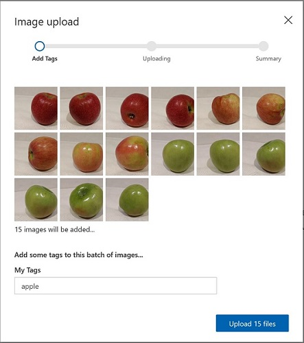
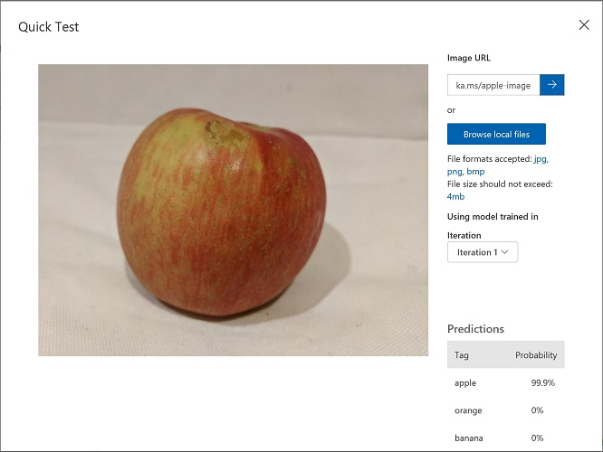
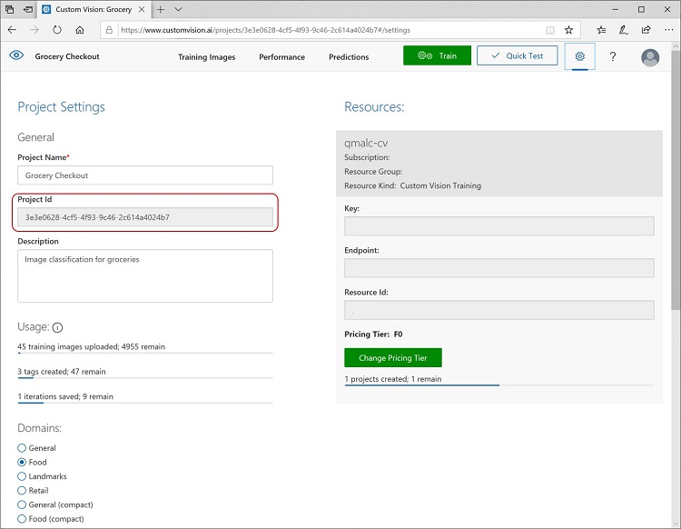

O serviço cognitivo Visão Computacional da Microsoft oferece modelos pré-construídos úteis para trabalhar com imagens, mas muitas vezes você precisará treinar seu próprio modelo. Por exemplo, suponha que a empresa varejista Northwind Traders queira criar um sistema de checkout automatizado que identifique os itens de supermercado com base em uma imagem tirada por uma câmera no caixa. Para isso, será necessário treinar um modelo de classificação que consiga identificar o item sendo comprado.

No Azure, você pode usar o serviço cognitivo Custom Vision para treinar um modelo de classificação de imagens com base em imagens existentes. Existem dois elementos para criar uma solução de classificação de imagem: primeiro, você deve treinar um modelo para reconhecer diferentes classes usando imagens existentes. Depois que o modelo estiver treinado, será necessário publicá-lo como um serviço para ser consumido por aplicações.
Para usar o serviço Custom Vision, você precisa de um recurso do Azure que possa usar para treinar um modelo e outro recurso com o qual possa publicá-lo para uso em aplicações. O recurso para ambas as tarefas pode ser um recurso geral de Serviços Cognitivos , ou um recurso específico de Custom Vision . Você pode usar o mesmo recurso para ambas as tarefas ou recursos diferentes (na mesma região) para gerenciar os custos separadamente.
Use as instruções abaixo para criar um novo recurso Custom Vision :
Em uma nova aba do navegador, acesse o portal do Azure em https://portal.azure.com e entre com a conta da Microsoft associada à sua assinatura do Azure.
Clique no botão + Criar um recurso , pesquise por custom vision e crie um recurso Custom Vision com as seguintes configurações:
Opções de criação : Ambos
Assinatura : Sua assinatura do Azure
Grupo de recursos : Crie um novo grupo com nome exclusivo
Nome : Insira um nome exclusivo
Local de treinamento : Escolha uma região disponível
Camada de preços para treinamento : F0
Local de previsão : Mesma região do recurso de treinamento
Camada de preços para previsão : F0
Nota : Se você já tiver um serviço Custom Vision F0 na sua assinatura, selecione S0 para este.
Aguarde a criação dos recursos. Note que dois recursos do Custom Vision serão provisionados: um para treinamento e outro para previsão. Você pode vê-los navegando até o grupo de recursos onde foram criados.
Para treinar um modelo de detecção de objetos, você precisa criar um projeto no Custom Vision com base no seu recurso de treinamento. Para isso, use o portal do Custom Vision:
Baixe e extraia as imagens de treinamento de https://aka.ms/fruit-images .
Em outra aba do navegador, acesse o portal do Custom Vision em https://customvision.ai . Se solicitado, faça login com sua conta Microsoft associada à assinatura do Azure e aceite os termos de uso.
No portal do Custom Vision, crie um novo projeto com as seguintes configurações:
Clique em $+$ Adicionar imagens e selecione todos os arquivos da pasta apple que você extraiu anteriormente. Faça o upload das imagens, especificando a etiqueta apple , assim:

Antes de publicar esta iteração do modelo para uso em aplicações, você deve testá-lo.
https://aka.ms/apple-image
e clique em ➔
Agora você está pronto para publicar o modelo treinado e usá-lo em uma aplicação cliente.
Clique em üó∏ Publicar para publicar o modelo treinado com as seguintes configura√ß√µes:
Após publicar, clique no ícone de configurações (⚙) no canto superior direito da página Desempenho para ver as configurações do projeto. Em Geral (à esquerda), copie o ID do Projeto e cole na célula de código abaixo, substituindo YOUR_PROJECT_ID .

Nota : Se você usou um recurso de Serviços Cognitivos em vez de criar um recurso de Custom Vision , você pode copiar sua chave e endpoint do lado direito das configurações do projeto, colá-los na célula de código abaixo e executá-la para ver os resultados. Caso contrário, continue os passos abaixo para obter a chave e o endpoint do recurso de previsão.
project_id = 'YOUR_PROJECT_ID'
cv_key = 'YOUR_KEY'
cv_endpoint = 'YOUR_ENDPOINT'
model_name = 'groceries' # Deve coincidir com o nome definido ao publicar
print('Pronto para prever usando o modelo {} no projeto {}'.format(model_name, project_id))
Para usar o serviço Custom Vision no Python, você precisa instalar o pacote azure-cognitiveservices-vision-customvision .
!pip install azure-cognitiveservices-vision-customvision
Agora você pode usar sua chave e endpoint com um cliente Custom Vision para se conectar ao modelo de classificação publicado.
Execute o código abaixo para classificar uma seleção de imagens de teste usando seu modelo publicado.
Nota : Não se preocupe com os detalhes do código. Ele usa o SDK de Visão Computacional para Python para obter uma previsão de classe para cada imagem da pasta
/data/image-classification/test-fruit.
from azure.cognitiveservices.vision.customvision.prediction import CustomVisionPredictionClient
from msrest.authentication import ApiKeyCredentials
import matplotlib.pyplot as plt
from PIL import Image
import os
%matplotlib inline
# Caminho das imagens de teste
test_folder = os.path.join('data', 'image-classification', 'test-fruit')
test_images = os.listdir(test_folder)
# Criar cliente de previsão
credentials = ApiKeyCredentials(in_headers={"Prediction-key": cv_key})
custom_vision_client = CustomVisionPredictionClient(endpoint=cv_endpoint, credentials=credentials)
# Exibir resultados
fig = plt.figure(figsize=(16, 8))
print('Classificando imagens em {} ...'.format(test_folder))
for i in range(len(test_images)):
image_contents = open(os.path.join(test_folder, test_images[i]), "rb")
classification = custom_vision_client.classify_image(project_id, model_name, image_contents.read())
prediction = classification.predictions[0].tag_name
img = Image.open(os.path.join(test_folder, test_images[i]))
a = fig.add_subplot(len(test_images)/3, 3, i + 1)
a.axis('off')
plt.imshow(img)
a.set_title(prediction)
plt.show()
O serviço Custom Vision oferece mais recursos do que exploramos neste exercício. Por exemplo, você também pode usá-lo para criar modelos de detecção de objetos , que não apenas classificam os objetos em imagens, mas também identificam áreas delimitadoras que mostram a localização do objeto.
Para saber mais, veja a documentação do Custom Vision .